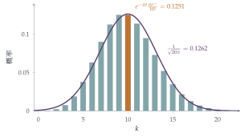

STEP II 2016，第 13 題
繼續之前，請先閱讀題目（原題為英文）。題目載於 STEP Support Programme 的題目資料庫： step.maths.org/questions/16-s2-q13
引子
\(100!\) 有多大？要逐項乘出來得花點工夫：它有 \(158\) 位數字。斯特靈公式（Stirling’s formula） \(n! \approx \sqrt{2\pi n}\,(n/e)^n\) 只用一行，就能給出誤差在 \(0.1\%\) 以內的答案。它是數學中最有用的近似式之一，在概率（probability）、統計物理和演算法分析中經常用到。
它有很多種證明（proof），可以用積分（integral）（第 4.4 節），也可以用歐拉–麥克勞林公式（Euler–Maclaurin formula）。本題給出的是最出人意表的一種：用概率來證明。平均值（mean）為 \(n\) 的泊松分佈（Poisson distribution）近似於正態分佈（normal distribution），在峯頂比較兩者，\(n!\) 的值就被確定下來。斯特靈公式中的 \(\sqrt{2\pi}\)，正正就是正態密度（normal density）中的 \(\sqrt{2\pi}\)。
動筆之前
設離散隨機變量（discrete random variable）\(X\) 的平均值為 \(\mu\)、方差（variance）為 \(\sigma^2\)，並且近似於正態分佈，那麼 \(\mathrm{P}(X = \mu)\) 大約是多少？（試想一個寬度為 \(1\)、以 \(\mu\) 為中心的區間的概率。）
按正態近似（normal approximation），\(\mathrm{P}(X = \mu) \approx \mathrm{P}(\mu - \frac12 < X < \mu + \frac12)\)，這大約等於寬度 \(1\) 乘以峯頂處的密度：\(\frac{1}{\sigma\sqrt{2\pi}}\)。
逐步解題
階段 1 十六枚硬幣
\(X \sim \mathrm{B}(16, \frac12)\) 的平均值為 \(8\)，方差為 \(16 \cdot \frac12 \cdot \frac12 = 4\)，所以 \(\sigma = 2\)。由正態近似， \[\mathrm{P}(X = 8) \approx \frac{1}{2\sqrt{2\pi}} \approx 0.1995.\] 準確值是 \(\binom{16}{8}/2^{16} = \frac{12870}{65536} \approx 0.1964\)，兩者相差不到 \(2\%\)。
階段 2 中央二項式係數
\(\mathrm{B}(2n, \frac12)\) 的平均值和標準差（standard deviation）是多少？分別寫出 \(\mathrm{P}(X = n)\) 的準確值和近似值。
平均值是 \(n\)，方差是 \(\frac n2\)，所以 \(\sigma = \sqrt{n/2}\)。準確值是 \(\mathrm{P}(X = n) = \binom{2n}{n}\frac{1}{2^{2n}}\)；近似值是 \(\frac{1}{\sqrt{n/2}\sqrt{2\pi}} = \frac{1}{\sqrt{\pi n}}\)。令兩者相等， \[\frac{(2n)!}{(n!)^2\,2^{2n}} \approx \frac{1}{\sqrt{\pi n}}, \qquad (2n)! \approx \frac{2^{2n}(n!)^2}{\sqrt{n\pi}}. \qed\]
階段 3 斯特靈公式
參數為 \(n\) 的泊松分佈，其平均值和方差都等於 \(n\)。分別寫出 \(\mathrm{P}(X = n)\) 的準確值和近似值。
準確值是 \(\mathrm{P}(X = n) = e^{-n}\frac{n^n}{n!}\)。當 \(n\) 很大時，泊松分佈近似於正態分佈（它是 \(n\) 個獨立的 Poisson\((1)\) 變量之和），其中 \(\sigma = \sqrt n\)，所以 \(\mathrm{P}(X = n) \approx \frac{1}{\sqrt{2\pi n}}\)。令兩者相等， \[n! \approx \sqrt{2\pi n}\,e^{-n}n^n. \qed\]

回顧
一點上的概率 \(\approx\) 密度乘以寬度。對於格點分佈（lattice distribution），某一點上的正態密度近似於該點的概率。
準確公式遇上近似式。二項分佈（binomial distribution）和泊松分佈的概率是準確的；令它們等於各自的正態近似，便得到階乘（factorial）的估計。
按公式的形狀選擇分佈。\(\binom{2n}{n}\) 令人想到 \(\mathrm{B}(2n, \frac12)\)；\(\frac{n^n}{n!}\) 令人想到 Poisson\((n)\)。
背後的數學
這個近似有多準確？
這個論證只是啟發式（heuristic）的：它在單獨一點上使用正態近似，而一般的中心極限定理（central limit theorem）並不足以支持這樣做。它有一個嚴格的版本，稱為局部中心極限定理（local central limit theorem），所做的正是這件事，並使這個論證成為真正的證明。斯特靈公式其實出奇地準確：比值 \(\frac{n!}{\sqrt{2\pi n}(n/e)^n}\) 大約是 \(1 + \frac{1}{12n}\)，所以即使 \(n = 1\)，它給出的也是 \(0.92\) 而不是 \(1\)；而當 \(n = 10\) 時，它只偏小了 \(0.8\%\)。完整的級數（series）\(1 + \frac{1}{12n} + \frac{1}{288n^2} - \cdots\) 是漸近級數（asymptotic series）的一個例子：對於大的 \(n\)，它給出的近似值越來越好；但對於固定的 \(n\)，它最終會發散（diverge）。
階乘與正態分佈為何相連
斯特靈公式和正態密度中的 \(\sqrt{2\pi}\) 是同一個常數，因為 \(\int_{-\infty}^\infty e^{-x^2/2}\,\mathrm{d}x = \sqrt{2\pi}\)。棣莫弗（Abraham de Moivre）在 1733 年正是循這條路找到二項分佈的正態近似的：他需要在 \(n\) 很大時近似 \(\binom{n}{k}\)；他找到了 \(n! \approx Cn^{n + 1/2}e^{-n}\) 這個形式，卻沒有找到那個常數。斯特靈（James Stirling）證明了 \(C = \sqrt{2\pi}\)。正態分佈是從階乘的漸近性質中誕生的。
棣莫弗是一位逃亡到倫敦的法國新教徒，靠當私人教師和為賭徒出謀獻策維生。他在 1718 年出版了 The Doctrine of Chances（《機會論》），並在 1733 年的一本小冊子中找到二項分佈的正態近似，這是正態曲線首次面世。蘇格蘭數學家斯特靈在他的 Methodus Differentialis（1730）中發表了該常數的值，棣莫弗亦大方地把功勞歸於他。階乘的近似至今仍是活躍的課題：組合數學（combinatorics）和密碼學（cryptography）都需要對極大的 \(n\) 計算 \(n!\)。
思維技巧
把一個準確的概率與一個近似值作比較，可以得知公式中那些數的資訊。
這種「概率方法（probabilistic method）」是雙向的。這裏概率給出了階乘的估計；艾狄胥（Erdős）則用它來證明某些圖（graph）的存在（第 9.2 節）。到了大學，你會見到概率被用來證明分析、數論和組合數學中的定理。
延伸練習
檢驗公式。用斯特靈公式估計 \(10!\) 和 \(20!\)，並與真確值 \(3\,628\,800\) 和 \(2\,432\,902\,008\,176\,640\,000\) 比較。
由 (iii) 到 (ii)。證明第 (iii) 部分的斯特靈公式可推出第 (ii) 部分的近似式。
\(100!\) 的位數。利用 \(\log_{10}n! \approx n\log_{10}\frac ne + \frac12\log_{10}(2\pi n)\) 證明 \(100!\) 有 \(158\) 位數字。
擲硬幣打成平手。利用第 (ii) 部分，證明擲一枚公平硬幣 \(1000\) 次而恰好得到 \(500\) 次正面的概率約為 \(0.025\)。
延伸閱讀
William Feller, An Introduction to Probability Theory and Its Applications, Vol. 1（Wiley），第 II 章，當中證明了斯特靈公式。
Ronald Graham, Donald Knuth & Oren Patashnik, Concrete Mathematics（Addison-Wesley），第 9 章，講述漸近分析。
Stephen Stigler, The History of Statistics（Harvard University Press），講述棣莫弗與正態曲線的誕生。